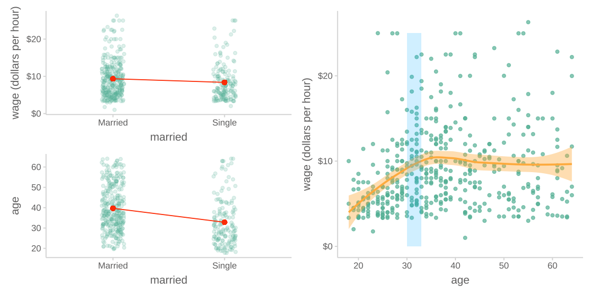
Overview
Mixed
이번 섹션에서는 통계가 어떻게 활용되는지에 대한 전반적인 landscape을 소개하고자 하며,
여기에서 다루는 내용을 모두 수업에서 다룬다는 것은 절대 아님!
통계가 활용되는 방식은 크게 3가지로 나누어 볼 수 있음
- 기술적 분석 (descriptive)
- 변수들 간의 진실한 관계를 분석 (relational)
- 인과 관계의 파악과 개입 (causual)
Descriptive: 기술적 분석
통계청의 조사 결과와 같이 현상에 대한 기술
단순한 기술은 자칫 오해의 여지와 호도할 위험이 존재
예를 들어,
- 남녀 임금의 차이에 대한 통계치를 제시하는 경우
- 외국의 경우, 인종별 범죄율에 대한 통계치 등등
만일, 좀 더 자세히 나눠어서, 연령별, 직업군별로 남녀 임금의 차이를 본다면 만족스러운가?
얼마나 더 상세히 나누어야 하는가?
그 차이는 의미있는 차이인가?
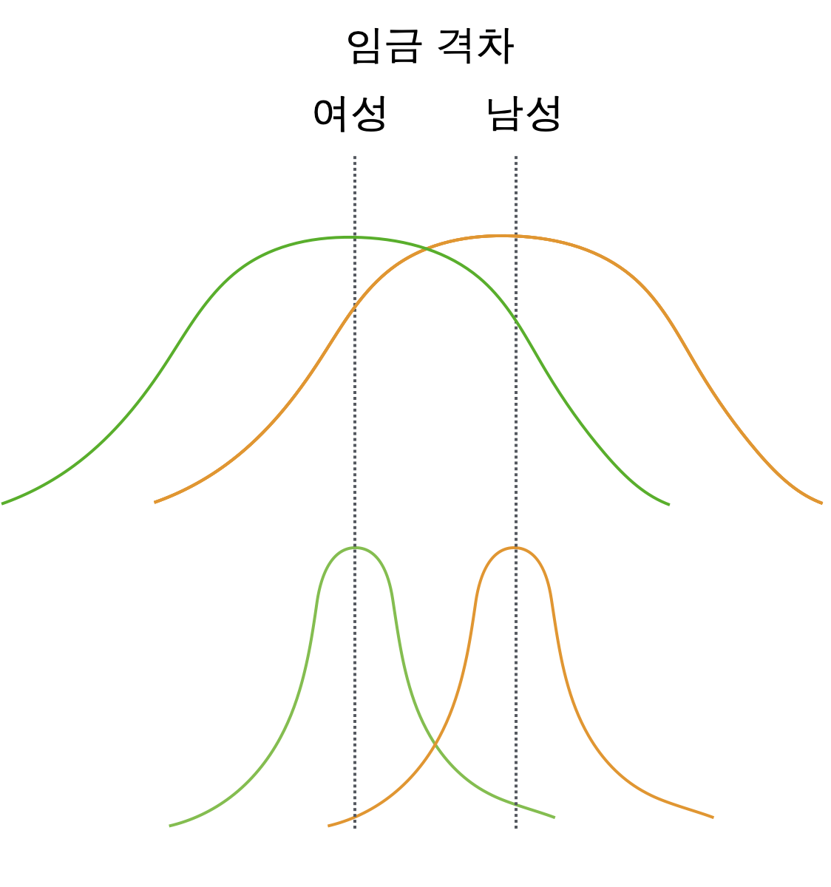
Relational: 변수들 간의 진실한 관계를 분석
Case 1
미혼자에 대한 임금 차별이 있는가? 차별이 의미하는 바는 무엇인가?
아래 첫번째 그림과 같이 기혼자의 임금이 미혼자에 보다 높은 것으로 나타났다면,
이는 정말 결혼하지 않은 것이 임금을 책정하는데 영향을 주었는가?
하지만, 당연하게도 기혼자는 미혼자에 비해 연령이 높으며 (두번째 그림),
높은 연령은 연차가 높거나 실무능력이 뛰어난 경향으로 인해 임금을 높을 수 있다는 것을 감안하면 (세번째 그림)
차별처럼 보이는 차이는 차별이라고 볼 수 없을 수도 있음.
다시 말하면, 연령을 고려한 후에도 기혼자의 임금은 미혼자보다 높은가?
여전히 높다면, 연령을 고려한 후 혹은 연령을 조정한 후(adjusted for age)의 차이는 얼마라고 봐야하는가?
연령을 고려한 임금 차이를 조사하는 방법은 무엇이 있겠는가?
- 연령별로 나누어 비교?
Data from the 1985 Current Population Survey
연령을 고려한 마라톤 기록?
70세 노인의 기록 2시간 30분과 20세 청년의 2시간 30분은 마라톤 실력이라는 관점에서 다르게 볼 수도 있음
예를 들어, “나이 차이가 큰 두 사람의 기록을 비교하는 것은 공평하지 않아”라는 주장에 대해서, 80세 노인의 기록은 “나이를 감안하면 2시간 10분에 해당한다”고 답변할 수 있음
다시 말하면, 나이와는 무관한/독립적인 마라톤 능력에 대해 말할 수 있음
이는 동일한 나이의 사람들로만 제한해서 마라톤 기록을 비교하는 것이 공평한 능력의 비교라고 말하는 것과 것이 같은 이치임
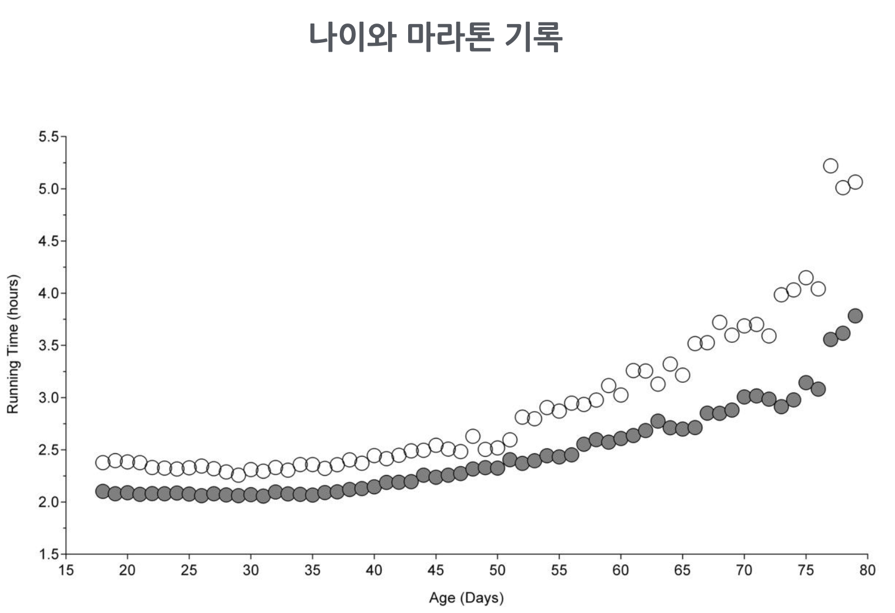
Source: https://doi.org/10.1186/2052-1847-6-31
Case 2
기혼여부에 따른 임금의 차이가 남녀별로 다른가?
연령이 올라감에 따라 임금이 올라가는 패턴에 차이가 있는가?
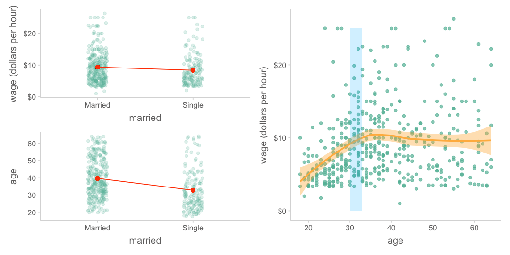
왼편 그림에서 보면, 기혼여부에 따른 임금의 차이가 남녀에 따라 다르게 나타나는 것으로 보임
이러한 현상을 변수 간에 상호작용(interaction)이 있다고 말함 (moderate라는 표현도 있음)
말하지면, 기혼여부가 임금에 주는 효과가 성별에 따라 바뀌고, 기혼여부와 성별이 상호작용하여 임금에 영향을 준다라고 표현할 수 있음 (2-way interaction)
비슷하게, 오른편을 보면, 연령에 따른 임금의 증가 패턴이 남녀에 따라서, 업종에 따라 다르게 나타나는 것으로 보임
(manag: management, manuf: manufacturing, prof: professional)
즉, 연령이 임금에 미치는 효과는 성별과 업종에 따라 바뀌고, 연령, 성별, 업종이 상호작용하여 임금에 영향을 준다라고 표현할 수 있음 (3-way interaction)
Warning
위의 표현은 모두 효과를 가정한 표현으로 설명을 위해 편의상 그렇게 표현하였음
또한, 다른 요소들은 단순화를 위해 생략했음. 예를 들어 왼편의 상황에서 나이를 고려하면 다른 양상을 보일 수 있음
또 다른 예로는, 나이가 듦(age)에 따라 지구력(endurance)의 감소가 강도 높은 운동을 한 기간(년수)(exercise)에 따라 변화한다는 가설을 테스트한 자료
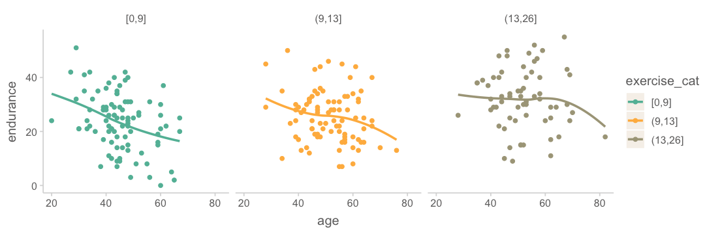
이 경우 운동을 한 기간은 앞의 예에서처럼 카테고리 변수가 아니기 때문에 임의로 3구간으로 나누어 살펴 본 것임.
나이가 지구력에 미치는 부정적 영향이 운동을 한 기간에 따라 변하는 것으로 보임.
즉, 나이와 운동기간이 상호작용하여 지구력에 영향을 미친다고 표현할 수 있음
상호작용은 아래와 같이 상호작용하는 두 변수의 위치를 바꿔 살펴볼 수도 있음
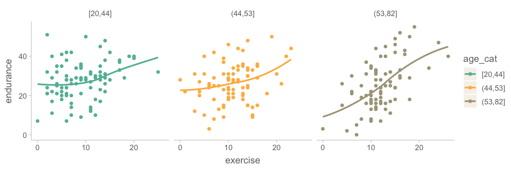
Important
시각화를 통해 전반적인 패턴을 살펴보는 것은 통계적 모형을 세워 수학적으로 분석하기 전에 하는 보조 수단임.
앞에 마라톤 기록의 예처럼 실제 분석은 한 변수를 고려한 후 다른 변수의 변화를 계산하는 방식으로 분석을 하는 것이지, 나이별로 자료를 나누어 보지 않듯이, 운동기간을 위에서처럼 구간으로 쪼개어 분석하는 것은 아님.
Case 3
임금이 증가하면 삶의 만족도가 높아지는가? 아마도?
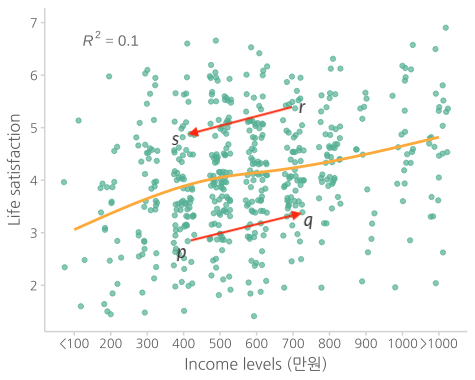
하지만, 특정 A의 임금이 p 에서 q 로 증가할 때, 트렌드대로 움직이겠는가?
혹은, 특정 B의 임금이 r 에서 s 로 감소할 때, 트렌드대로 움직이겠는가?
개인의 변화를 살펴보는 종단연구(logitudinal)로 그 갭을 채울 수 있음
하지만, 그럴지라도 임금으로 “인해” 삶의 만족도가 올라가느냐는 다른 문제임 >> 인과관계의 문제
- 예를 들어, 연봉의 증가가 삶의 만족도를 올렸다기 보다는 상대적 비교에서 오는 자존감이 증가했기 때문일 수 있음
- 연봉이 높은 곳은 직업 특성이 다를 수 있음
- 또는, 인맥과 인간관계의 변화에서 오는 차이일 수도 있음
다른 시각에서 보면,
현재 A의 연봉 2천만원을 갑자기 4천만으로 올리면 삶의 만족도가 트렌드대로 0.8pt 올라가겠는가?
- 연봉의 증가는 주변의 시기와 질투를 가져와 인관관계에 영향을 줄 수 있음
- 본인의 자만은 여러 부정적 결과를 초래할 수 있음
Prediction vs. intervention
- A의 임금이 올라가면 삶의 만족도가 따라서 올라갈 것이라고 (조심스럽게) 예측할 수는 있으나: association
- 좀 더 정확히 말하면, 임금이 높은 것은 삶의 만족도가 높은 것과 연관이 있다라고 표현
- “올라가면”이라는 표현은 시간 개념을 포함한 것이라 횡단(cross-sectional) 데이터에서는 부적절
- A의 임금을 올리면 삶의 만족도가 올라갈 것이라고 단정할 수 없음: causal
- Intervention이 효과가 있으려면, 적어도 진정한 관계를 파악해야만 하며, 더 나아가 인과관계가 만족해야 함.
- 진정한 관계의 문제와 인과의 문제는 서로 엮여 있으며 복잡한 문제임.
- 예를 들어, 오렌지를 섭취하면 괴혈병이 예방되나 사실은 비타민 C의 섭취가 괴혈병을 예방하는 것임
만약, 장거리 항해에서 상급자(높은 연령)에게만 과일이 제공되어 괴혈병이 덜 생겼다는 현상으로부터 연령과 괴혈병의 관계를 추론해서는 안됨
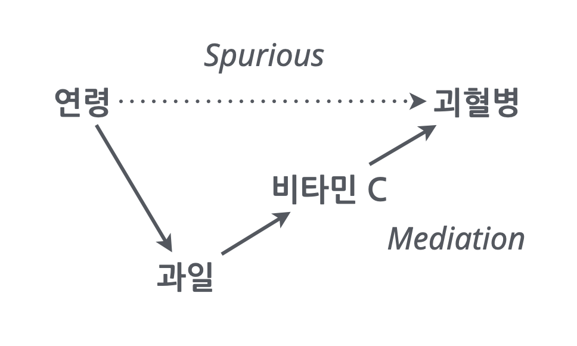
- 또는, 신앙심이 깊은 노인들의 수명이 더 길다는 현상이 관찰되었을 때, 신앙심 자체가 심리적으로나 신체적으로 긍정적인 효과를 가질 수 있으나, 그 외에도 신앙 활동의 일부로 활동이 늘고 다른 이와의 긍정적 교류가 건강에 영향을 미쳤을 수도 있음.
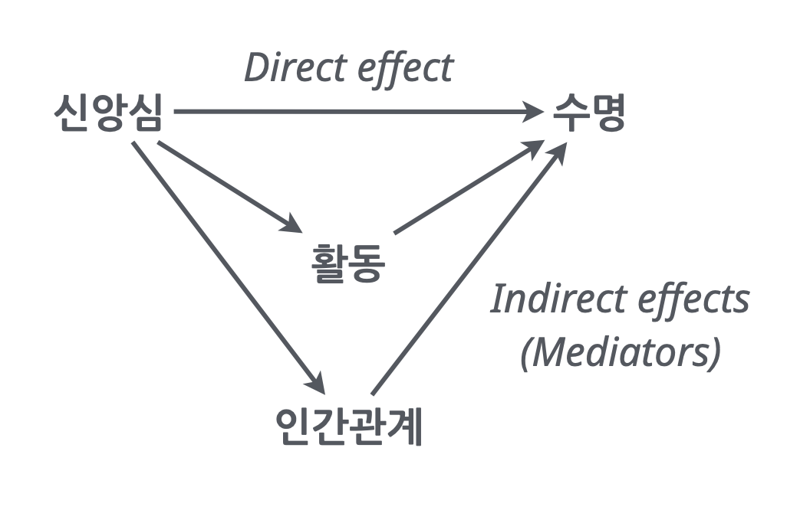
이 때, 신앙심과 수명과는 진정한 관계가 있다고 볼 수 있으나 그 인과 관계에 대해서도 좀 더 깊은 논의가 필요함.
다시 말하면, 어떤 노인에게 신앙을 권유했을 때, 수명이 연장되었을지라도 신앙심이 수명을 연장시킨 것인가는 별개의 논의임.
- 예를 들어, 오렌지를 섭취하면 괴혈병이 예방되나 사실은 비타민 C의 섭취가 괴혈병을 예방하는 것임
The strength of relationships
변수들간의 관계와 그 관계의 크기(stength)는 중요하게 구별될 필요가 있음
아래 두 그림은 변수 간의 관계는 동일하나 그 크기에 차이가 있음
오른쪽 그림에서 연봉으로 그 사람의 삶의 만족도 지수를 더 정확히 예측할 수 있으며, 이를 설명력이 높다고 표현
보통 이 효과의 크기가 클수록 인과관계일 가능성은 높다고 볼 수 있으며,
왼쪽 박스에서 처럼 variability가 높다는 것은 다른 이유가 있을 가능성이 높음
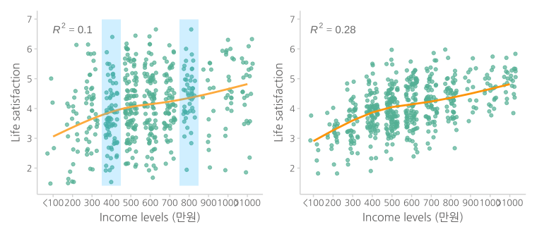
Note
진정한 관계를 탐구하는 것이 어려움에도 불구하고, 관계성을 파악함으로써 통찰을 얻을 수 있음.
복잡한 변수와의 관계를 풀어내려고 노력
Source: Multiple Regression and Beyond by Timothy Z. Keith
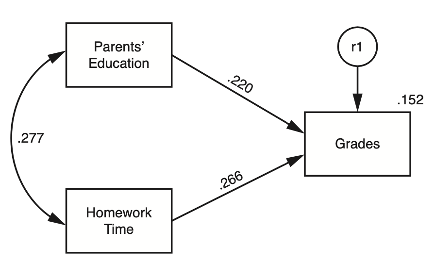
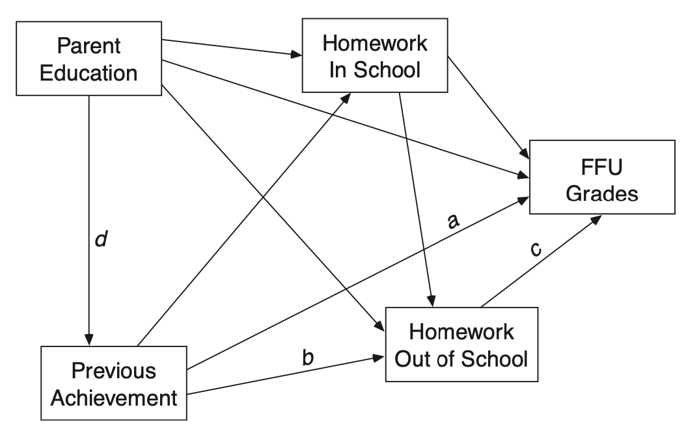
Causal: 인과관계의 분석
위에서 살펴본 것들은 모두 연구자가 개입하지 않고 관찰만으로 이루어진 분석들임
논의한 것처럼 관찰된 자료로부터 진실된 관계를 파악하는 것은 매우 정교한 분석이 요구되고 많은 요소들을 고려해야 함.
좀 더 분명한 관계를 파악하기 위해 실험 연구가 요구되곤 함
하지만, 많은 경우 실험이 불가능할 뿐 아니라,
실험이 반드시 최선이 것은 아니며, 실험은 나름데로 약점을 갖고 있음.
Confounding
일반적으로, 표면적으로 드러난 변수간의 관계가 숨겨진 다른 변수(lurking third variable)에 의해 매개되어 있어 진실한 관계가 아닌 경우, confounding 혹은 confounder가 존재한다고 함.
사회과학에서 오래된 가장 핵심적인 문제이나 최근까지도 정확히 정의하기 어려움 개념이었음.
Causal analysis라는 통계와는 별개의 개념으로 발전되어 최근에야 이론적으로 완성이 되어 관심이 높아짐.
극단적이지만 이해하지 쉬운 예로는
- 초등학생 발 사이즈 → 독해력
- 머리 길이 → 우울증
Answer!
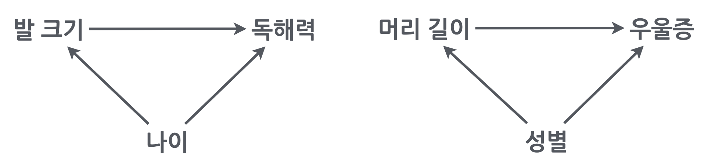
맨 처음 든 예도 마찬가지로 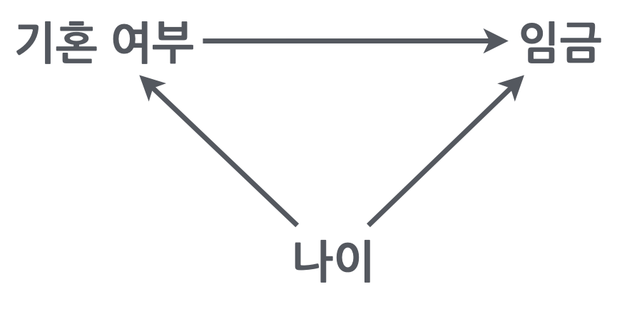
올바른 관계를 파악하려면, 동일한 나이에 대해 그 관계를 파악한 후 각 나이에서의 효과를 (weighted) 평균해서 살펴봐야함
통계에서는 이를 나이를 통제 (control for age)한다고 표현하며, 같은 의미로 다음과 같은 표현을 씀
나이를 고려했을 때; account for age
나이를 조정했을 때; adjust for age
나이를 잔차화했을 때; residualize age
나이의 변량을 넘어서서; above and beyond age
Simpson’s paradox
아래 첫번째 그림은 집단 전체에 대한 플랏이고, 두번째 그림은 나이대별로 나누어 본 플랏
전체 집단을 보면 운동을 많이 할수록 콜레스테롤이 증가하는 것으로 보이나,
나이대별로 보면, 상식적으로 운동이 긍정적 효과가 나타남.
왜 그렇게 나타나는가?
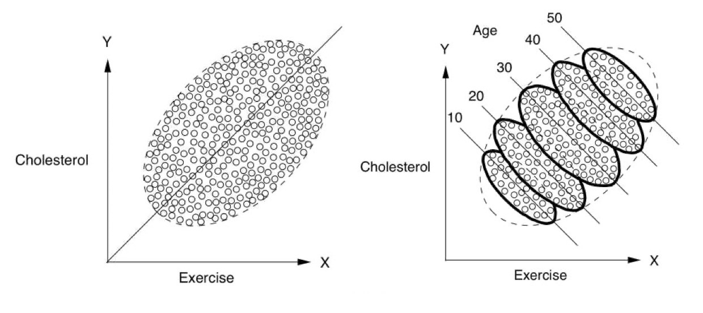
Source: The book of why by Judea Pearl
관찰 데이터로부터 진정한 관계를 파악하기 위해서는 이와 같은 통계적인 통제를 통해 혹은 인과분석이라는 좀 더 큰 프레임에서 분석해야 하며, 깊은 논의가 필요함
마지막 예를 들면,
은퇴한 노인들을 대상으로 규칙적인 걷기가 사망율을 감소시킬 것이라는 가설을 확인하기 위해 1965년 이후 8000명 가량의 남성들을 추적조사한 데이터의 일부를 이용했는데,
Source: The book of why by Judea Pearl
- 12년 후 사망율에서 casual walker(하루 1마일 이하)와 intense walker(하루 2마일 이상)가 각각 43%, 21.5%로 나타났음.
- 이 걷기의 효과를 의심케 하는 요소들(confounding)은 무엇인가?
Answers!
- 건강이 나빠 많이 걷지 못했을 수도…
- 많이 걷는 사람은 상대적으로 젊을 수도…
- 많이 먹는 사람이 덜 걸을 수도…
- 술을 많이 먹는 사람이 덜 걸을 수도…
Important
무수히 많이 생각해볼 수 있는 confounding 요소들을 다 고려해야 하는가?
Yes and No!
실제 저자들도 다음과 같이 기술
“Of course, the effects on longevity of intentional efforts to increase the distance walked per day by physically capable older men cannot be addressed in our study.”
이러한 조심성은 의미있느나 너무 과장될 필요는 없음
소위 중요 역할을 할 것으로 의심되는 confounding을 충분히 통계적으로 고려/통제했다면, 충분히 인과관계 혹은 intervention을 제안할 수 있으며,
그러한 연구는 어떤 요소들을 고려했는지에 대해 밝힘으로써 추후 연구에서 어떤 부분이 더 추가적으로 고려되야 할지 알 수 있게 함.
앞서 살펴본 관찰 연구들이 모두 confounding의 위험을 안고 있기에 결정적인 인과관계를 파악하기 위해, 전통적으로 “통계학”의 시각에서 인과문제에 대해서는 보통 임상테스트에서 실시하는 RCT (randomized controlled trial)라고 부르는 소위 gold standard한 실험 연구를 통해서 해결하고자 했음
개념적으로는 물리적 통제라고 볼 수 있으며, 두 그룹으로 집단을 randomly assign(무선/무작위 배정/할당)하면 모든 면에서 동질한 성향을 가짐. 예를 들어, 두 집단의 연령이 평균적으로 동일해짐.
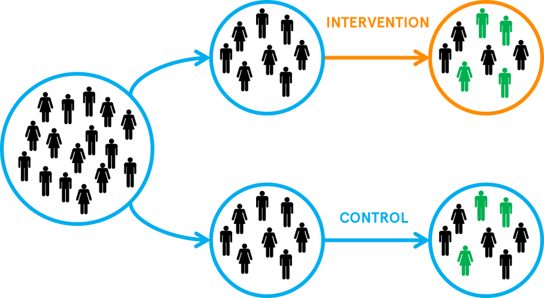
Source: The whats and whys of RCTs
앞서 든 예에서, 걷기가 사망율에 미치는 효과를 검증하려면, 가령 600명을 300명씩 두 그룹으로 무작위로 나눈 후 한쪽은 1마일 이하를 걷도록 하고 나머지는 2마일 이상을 걷게 한 후 12년 후 사망율을 확인해야 함.
분야마다 효과를 제대로 검증하기 위한 많은 실험 설계들이 발전되었음 >> 연구방법론
그럼에도 불구하고, 실험 연구는 자체로 한계를 지님 - 많은 경우 실험이 불가능하며 - 실험에서 처치한 구체적인 상황에서만 유효하고 - 그 효과는 어떻게 표현할 것인가?
Case 1
Terror Management Theory (TMT)
Self-esteem의 이론적 근거를 밝히고자 함. 왜 인간은 self-esteem을 유지하려는가?
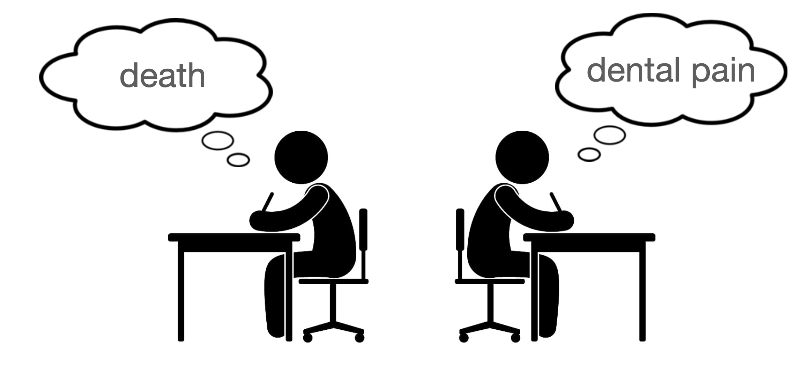
Treatment: 자신의 죽음과 고통에 대해 생각해보고 써보도록 하고
Control: 자신의 치통에 대한 질문에 답
고정관념에 부정적인 사람에 대해 더 부정적으로 평가: defences their own culural worldview
(e.g. Stereotypes and Terror Management: Evidence That Mortality Salience Enhances Stereotypic Thinking and Preferences)
- 모두 부정적인 감정을 불러 일으킴
- “죽음에 대한 생각”이 정확히 이 효과를 만든 것인가?
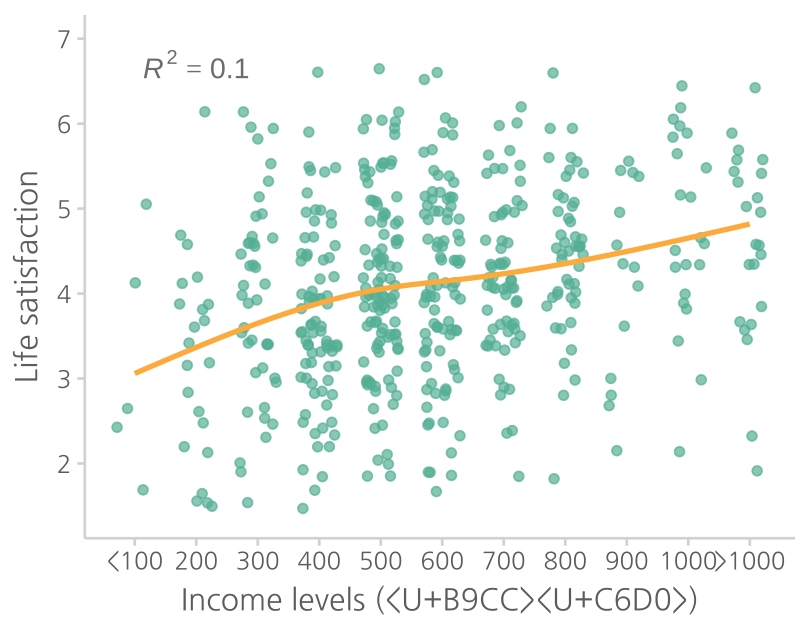
Case 2
마시멜로우 실험, 1960’s
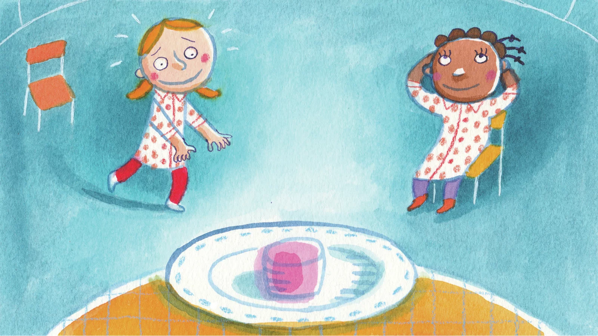
Source: Want To Teach Your Kids Self-Control?
3-5세 아이들에게 마시멜로우 1개를 놓고 원하면 먹도록 하나, 만약, 5분을 안먹고 기다리면 2개를 먹을 수 있다고 말한 후, 기다리지 못하고 먹는지를 살펴봄
소위 delay gratification을 self-control을 발휘한 것으로 이해했으며, 먹지 않고 기다린 아이들이 추후에 학업성취도 및 여러면에서 뛰어난 결과를 보고 하였음.
- 아이들이 참고 기다린 것은 자력에 의한 자기통제력인가?
- 어른들 즉, 권위에 대한 복종인가?
- 더 많이 먹기 위한 욕심인가?
- 눈 앞에 이익을 빨리 취하는 것은 좋은 전략일 수 있지 않은가?
혹시 실험을 진행하는 실험자에 따라 다른 효과가 나타날까? (Experimenter effects)
처치(treatment)의 효과인가 처지가 일어나는 상황이 만든 효과인가?
마시멜로우 실험의 경우에서 아이들에게 기다리라고 지시한 experimenter들의 정보가 필요함.
그럼, 각 experimenter별로 자료를 분석해야 하는가?
좀 더 확장하면,
- 같은 처방을 내린 의사들에 따라 다른 효과가 나타날까?
- 의사가 속한 병원마다 다른 효과가 나타날까?
- 특정 수업방식의 효과가 학교마다 선생님마다 다르게 나타날까?
Multi-level analysis (mixed effect model)
만약, 군집을 이루는 단위가 충분히 많다면,
예를 들어, 10개의 병원에서 30명의 의사가 각각 50명의 환자에게 새롭게 개발된 처방을 처치하여 그 효과를 볼 때,
- 병원의 효과 vs. 의사의 효과 vs. 처치의 효과를 분리하여 좀 더 분명한 효과를 찾을 수 있음
또는, 30개의 학교에서 50명의 선생님에 의해 특정 수업의 효과를 검증할 때,
- 학교의 효과 vs. 선생님의 효과 vs. 수업의 효과를 분리해 볼 수 있음
분석을 위해 각 선생님 마다 혹은 학교마다 따로 분석하는 방식이 아닌 모든 샘플을 동시에 이용한 고급 통계 방법
Uncertainty
관찰자가 관찰한 대상으로부터 얻은 결과를 관찰하지 않은 더 넓은 대상으로 일반화할 수 있는가?
가령, 다음과 같이 150명에 대해 조사한 “연령이 임금에 미치는 효과”를 일반화 할 수 있는가?
한 나라의 국민 전체?
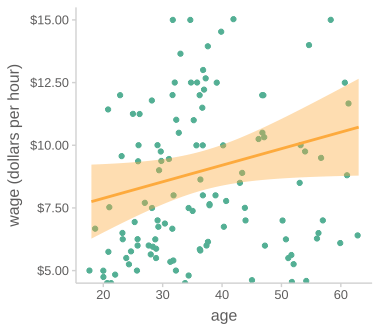
Statistical inference (통계적 추론)
통계학의 추론(statistical inference)은 작은 샘플(sample)로부터 얻은 분석 결과를 바탕으로 모집단(population)이라고 부르는 전체에 대해 말하고자 하는 시도에서 비롯되었음
- 어떤 비료가 특정 콩 A의 재배에 어떤 영향을 미치는지 알기 위해 샘플 위에서 실험이 이루어지고, 그 결과가 A라는 콩의 종 전체에 얼마나 적용될 수 있을지를 알아보고자 했음
- 사람에게도 적용될 수 있는가?
사실상 복잡한 통계 이론의 상당부분을 차지함.
지금까지 논의한 모든 내용은 “특정 샘플”에 대한 변수들 간의 관계에 대한 분석일 뿐 그 샘플을 벗어나서 논의한 것이 아님.
통계적 추론의 논리는 개념적으로는 다음과 같이 의외로 간단함.
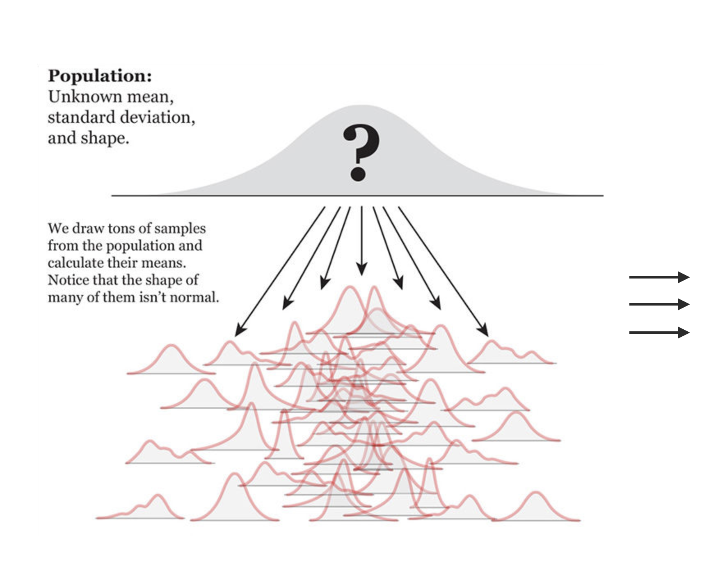
Source: The Truthful Art by Albert Cairo.
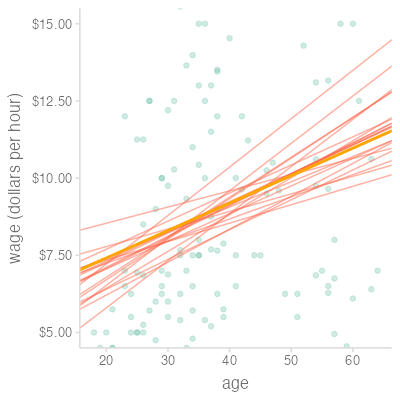
Linear regression results (선형 회귀)
MODEL INFO: Observations: 150 Dependent Variable: wage Type: OLS linear regression MODEL FIT: F(1,148) = 3.777, p = 0.054 R² = 0.025 Adj. R² = 0.018 Standard errors: OLS ----------------------------------------------------------- Est. 2.5% 97.5% t val. p ----------------- ------- -------- ------- -------- ------- (Intercept) 6.563 3.982 9.145 5.024 0.000 age 0.066 -0.001 0.133 1.944 0.054 -----------------------------------------------------------
맨 처음 든 예를 회귀분석하면
결혼여부에 따른 평균 임금의 차이는 미혼일 때 -0.97 (dollars/hr) 낮음.
하지만, 모집단에서 그 차이는 (95% 확률로) -1.93에서 -0.02 사이에 있을 것이라고 추정할 수 있음
MODEL INFO: Observations: 465 Dependent Variable: wage Type: OLS linear regression MODEL FIT: F(1,463) = 4.02, p = 0.05 R² = 0.01 Adj. R² = 0.01 Standard errors: OLS ----------------------------------------------------------- Est. 2.5% 97.5% t val. p ------------------- ------- ------- ------- -------- ------ (Intercept) 9.35 8.80 9.90 33.34 0.00 marriedSingle -0.97 -1.93 -0.02 -2.00 0.05 -----------------------------------------------------------
앞서 논의한데로 나이가 confounding이 될 수 있고,
이를 통계적으로 통제하면,
MODEL INFO: Observations: 465 Dependent Variable: wage Type: OLS linear regression MODEL FIT: F(3,461) = 14.42, p = 0.00 R² = 0.09 Adj. R² = 0.08 Standard errors: OLS ------------------------------------------------------------ Est. 2.5% 97.5% t val. p ------------------- ------- -------- ------- -------- ------ (Intercept) -5.21 -10.18 -0.24 -2.06 0.04 marriedSingle 0.11 -0.87 1.09 0.23 0.82 age 0.69 0.43 0.94 5.34 0.00 I(age^2) -0.01 -0.01 -0.00 -4.79 0.00 ------------------------------------------------------------
“나이를 고려했을 때”, 미혼이 기혼보다 그 임금이 오히려 0.11 (dollars/hr) 높은데,
모집단에서 그 차이는 -0.87 ~ 1.09 사이에 있을 확률이 매우 높은 것으로 추론됨. (95% 확률로)
이는 사실상 임금 차이가 있다고 볼 확신을 거의 갖기 어려움
Note
나이와 임금의 관계가 위의 플랏에서 나타났듯이 35세부터 일정하게 유지되는 패턴을 보이므로 그 비선형성을 단순화하여 2차 함수 꼴\((y=c+b\cdot age+a\cdot age^2)\)로 모델링을 하였으나 원칙적으로는 다른 모형이 필요함
그 외
종속변수가 연속변수라고 볼 수 없는 경우들
- 완치 여부: success vs. fail
- 구매 여부: yes vs. no
- 사건 또는 사람의 수 (count)